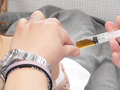

プラセンタ療法
プラセンタとは
プラセンタとは、人の胎盤より抽出した物質です。
胎盤の有効成分の中には、各種の成長因子が含まれいるため、新陳代謝を活発にし、病気に対する抵抗力や、自然治癒力を高めると同時に、皮膚及び全身の若返りがおこります。
美肌、美白、滋養強壮、疲労回復などの効果をあげています。他、肩こり、腰痛にも有効です。
プラセンタの効果
アトピー性皮膚炎、しみ、生理痛、腰痛症、肩凝り、更年期障害、免疫強化作用、抗疲労作用
治療内容
注射：プラセンタ製剤(ヒト)単独、又はビタミン剤との併用
内服：錠剤(健康補助食品)
外用：ＧＨＣコスメティクス(ホワイトニングソープ、エッセンスなど)
プラセンタ療法の料金
※自由診療のため保険適用外となります。
| 一般注射 | 初診：1,100円(税込) |
|---|---|
| 1アンプルにつき：1,100円(税込) | |
| ツボ注射 | 初診：5,500円(税込) (※内訳 初診料：1,100円(税込)、技術料：2,200円(税込)、2アンプル(2,200円(税込))使用) |
| 2回目より：4,400円(税込) | |
| 点 滴 | ３アンプル使用：5,500円(税込) |
※1回のアンプル数や回数は、個人の症状等により、医師との相談で変わります。
※肝機能障害の方は保険適用（注射治療のみ）となります。
プラセンタについてのよくあるご質問
- エイズや感染症の心配はないの？
- ウィルスや細菌に汚染されているヒトプラセンタが本製品の原料に混入しないよう、本製品の製造にあたっては、以下のような汚染防止対策をとっていますのでご安心ください。
１：ドナースクリーニング
２：受け入れ検査
３：高温（高圧蒸気）滅菌処理
４：製品試験 - プラセンタ注射の効果は？
- 肝臓病、アトピー性皮膚炎、皮層乾燥症、しみ、しもやけ、生理痛、生理不順、冷え症、更年期障害、のぼせ、腰痛症、肩凝り、リウマチ、免疫強化作用（風邪をひきにくくなる）、抗疲労作用等が挙げられます。
- プラセンタにはホルモンは入っていないの？
- 日本で製造されているプラセンタエキスは長期間安全に使用されるために製造工程でホルモンが残存しないように分解しています。
- 注射はどのくらい打つの？
- 個人の症状にもよりますが、最初の1～２ヶ月（初期療法）は週に１～2回。維持療法は1週間ないし、2週間に1回位が効果的です。
- 注射を打ったら、その周りが温かくなるのは何故？
- プラセンタに血行促進作用があるからです。
- 化粧品にプラセンタ配合と書かれていますが、どんな効果があるの？
- 保湿作用、美白効果、血行促進作用、新陳代賦活作用、抗炎症作用、細胞分裂促進作用、抗アレルギー作用等の効果があります。
診療内容
藤浪医院
内科(胃腸科・消化器科・呼吸循環器科・内分泌科・アレルギー科)、自由診療
| 診療時間 | 月 | 火 | 水 | 木 | 金 | 土 | 日 祝 |
|---|---|---|---|---|---|---|---|
| 午前 9時～12時半 |
○ | ○ | ○ | ○ | ○ | ○ | - |
| 午後 15時～18時 |
○ | ○ | ○ | - | ○ | - | - |
※受付は診療時間の30分前まで
住所：広島市西区草津南2丁目6-7
目印：草津派出所、草津南バス停近く。(広島バス)
駐車場：4台
ご予約・お問い合わせ
TEL：082-278-1700
FAX：082-278-1800